나트랑(베트남)의 지역: 어디서 살고 어디서 쉴까
글쓴이: 옥사나 야스노바 · 2026년 11월 19일
현지 거주자가 소개하는 나트랑 지역 간단 정리.
나트랑에는 다섯 개의 주요 지역이 있습니다: 중심, 북부, 남부, 서부, 그리고 안비엔. 하지만 나트랑은 그보다 앞선 깜라인에서부터 시작됩니다.
깜라인 — 리조트 지역
리조트 해안(칸호아성 깜라인 지역)은 공항 바로 뒤에서 시작해 도시 방향으로 30킬로미터에 걸쳐 이어집니다. 이 지역을 바이자이라고 부릅니다.
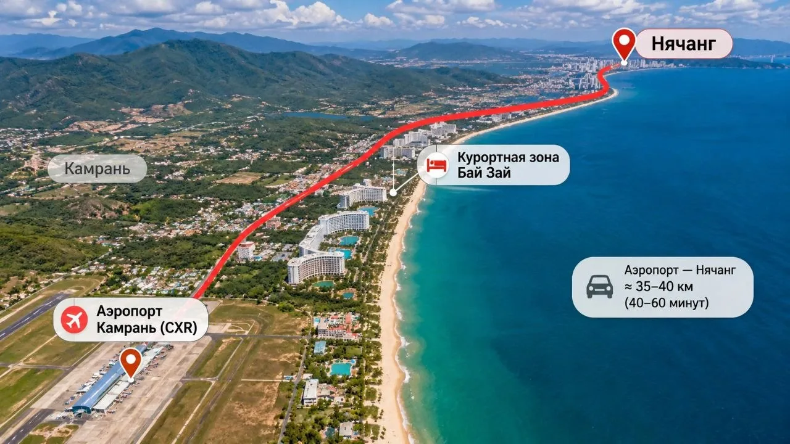
바다를 따라 최고급 5성급 호텔들이 자리하고 있습니다: 뫼벤픽(Mövenpick), 알마(Alma), 래디슨 블루(Radisson Blu) 등. 호텔 부지가 넓고 수영장, 상점, 워터파크, 전용 해변을 갖추고 있습니다. 깜라인에는 ‘올인클루시브’ 휴양을 위해 갑니다. 시내까지는 택시나 하루 2~3번 운행하는 호텔 무료 버스로 갈 수 있습니다.
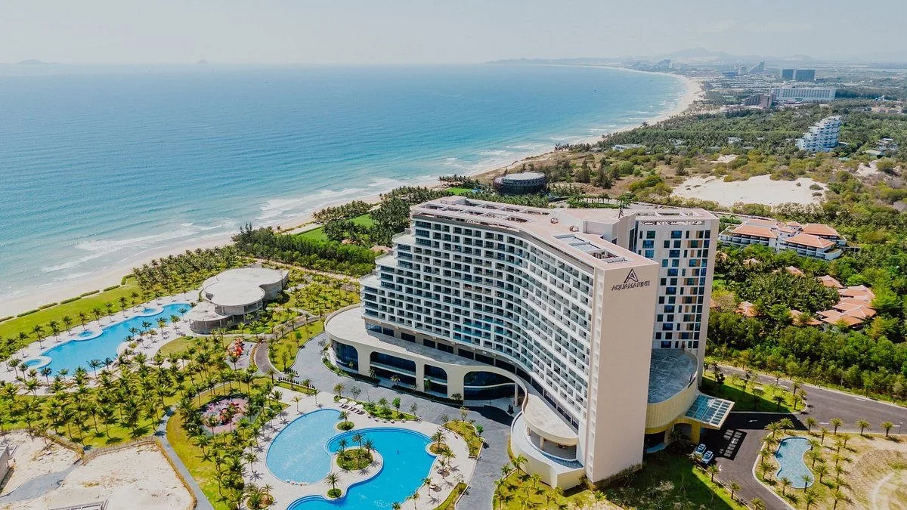
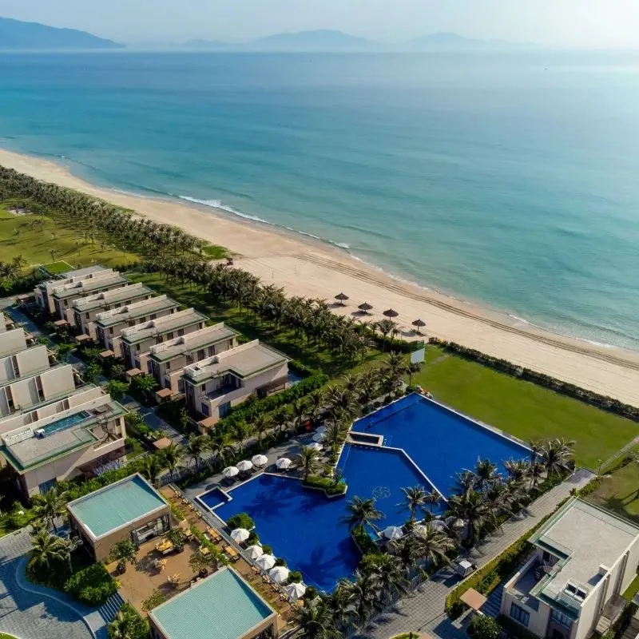
나트랑 중심
인구가 가장 많은 지역으로, 호텔과 아파트가 가장 많습니다.
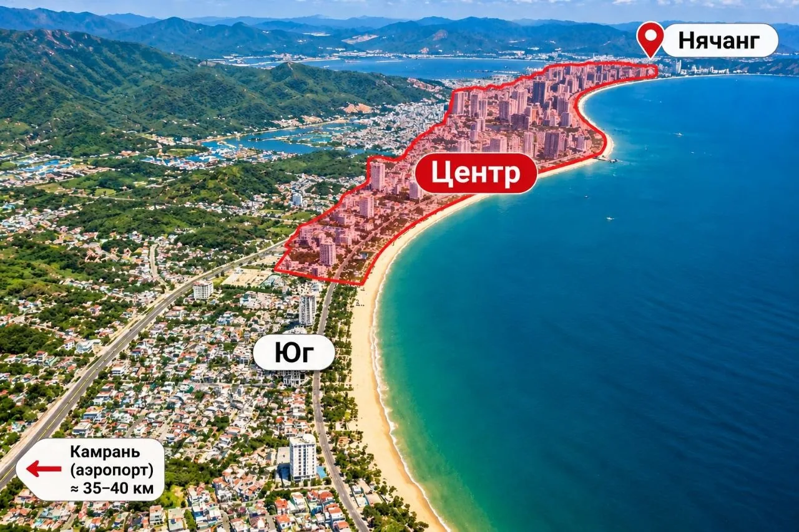
중심은 나트랑 생활의 심장입니다. 유명한 하얀 연꽃 탑(Trầm Hương Tower), 붉은 깃발이 있는 시내 메인 해변, 주요 쇼핑센터가 모두 이곳에 있고, 호텔들이 벽을 맞대고 줄지어 서 있습니다. 해변 산책로에서는 콘서트와 축제 공연이 열리고, 연꽃 탑 바로 맞은편에는 시청이 있습니다.
중심에서 장기 거주용으로 집이나 아파트를 빌린다면 시끄럽다는 점을 고려해야 합니다. 새벽 5시부터 자동차와 오토바이 통행이 많고, 낮에는 관광객이 넘쳐나며, 저녁이면 카페와 레스토랑마다 음악을 틀고 디스코가 시작됩니다. 관광객들이 술을 마시고 즐기며 아침까지 놀기 때문에 중심에서 살고 잠자기는 편하지 않습니다.
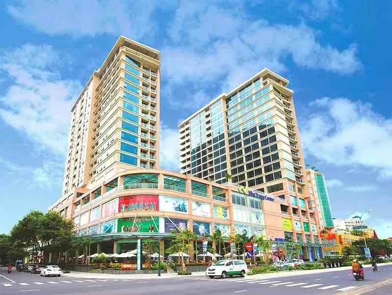
나트랑 남부
중심 아래, 바다를 따라 도시의 남부가 있습니다.
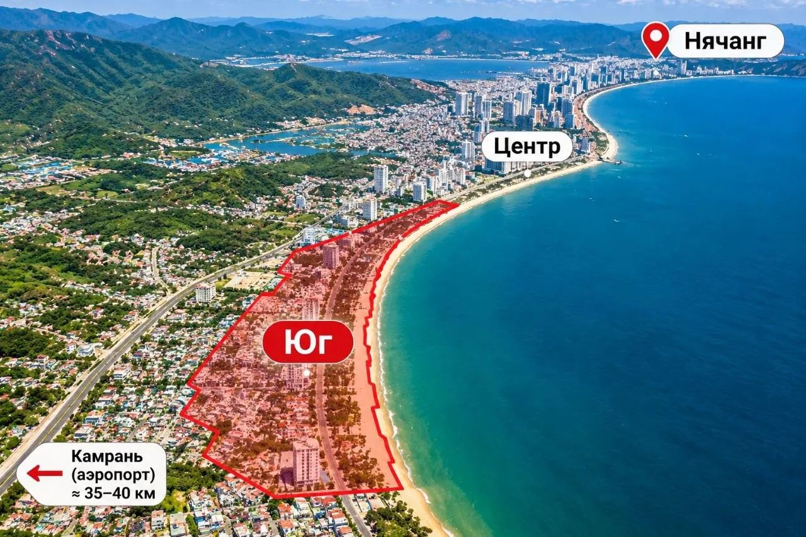
꽤 큰 지역으로, 과일과 해산물을 파는 빈탄 시장과 자체 해변이 있습니다. 진짜 베트남식 주거 지역입니다.
2~3층짜리 개인 주택, 작은 가게, 저렴하고 맛있는 식당이 많습니다. 이곳 사람들은 새벽 4~5시에 일찍 일어나고 저녁 8~9시에 일찍 잠들기 때문에 저녁과 밤에는 아주 조용합니다. 안전하고 평온한 지역이라 장기 거주에 좋습니다.
남부에도 바다 전망 호텔이 있습니다. 중심만큼 화려하지는 않고 조금 더 저렴합니다. 아파트도 꽤 많은데, 대부분 주거 지역 깊숙이 자리한 5~6층짜리 작은 건물입니다. 남부에는 러시아어를 쓰는 이주민이 많이 살지만, 너무 조용히 눈에 띄지 않게 살아서 마치 없는 것처럼 느껴집니다.
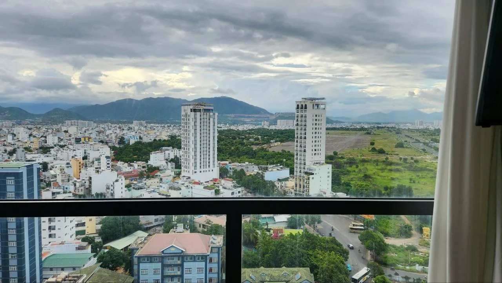
안비엔 — 고급 빌라와 한적함의 지역
안비엔은 나트랑의 독립된 지역으로, 쭛산 남쪽 기슭의 만 해안에 있으며 빈펄섬으로 가는 케이블카에서 멀지 않습니다.
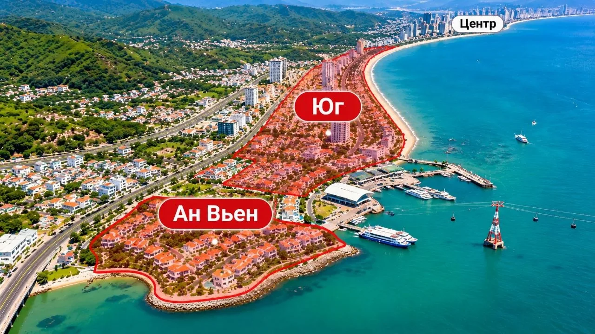
바다가 보이는 지역으로, 하얀 석조 빌라들이 녹음 속에 묻혀 있습니다. 고급 리조트 마을처럼 보이고, 외부의 시선에서 닫힌 값비싼 유럽 리조트 같은 분위기를 풍깁니다. 안비엔에는 분수와 금빛 장식이 있는 좋은 부티크 호텔이 몇 곳 있습니다.
하지만 아직 완성되지 않은 지역입니다. 상점이 없고 카페는 두세 곳뿐이며, 많은 빌라와 호텔이 아직 공사 중입니다. 또한 도시 외곽에 있어 오가기가 불편합니다. 그래도 주변에 사람이 없고 당신과 몇몇 이웃만 있는, 한적함과 완전한 고요함을 원한다면 이 지역이 훌륭한 선택이 될 것입니다.
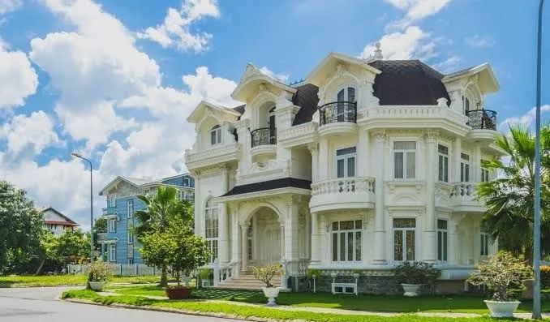
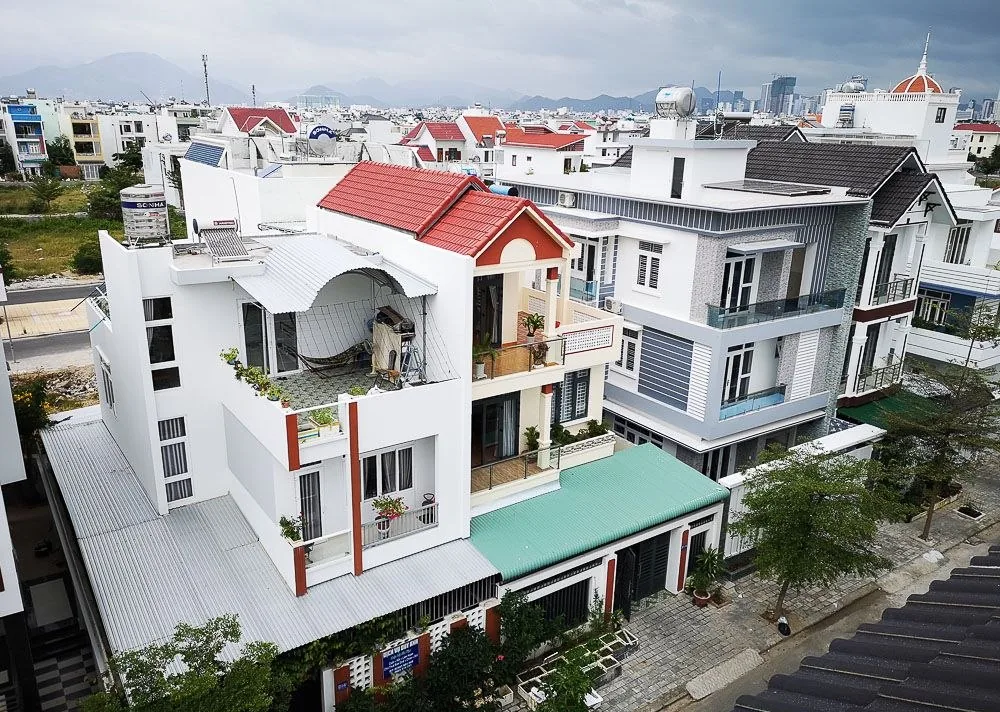
나트랑 북부 — ‘러시아 지역’
도시의 북부는 해협 건너편에 있으며, 두 개의 다리 중 하나를 건너 갑니다.
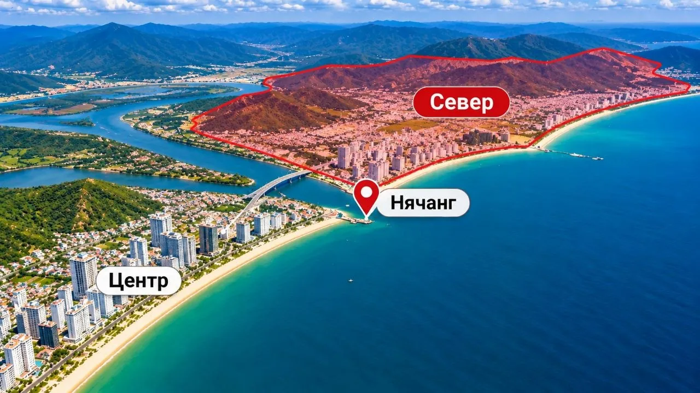
다리를 건너자마자 시내에서 가장 좋은 북부 해변이 시작됩니다.
해변 맞은편에는 대형 고층 단지 두 곳, 오셔너스(Oceanus)와 세니아 베이(Scenia Bay)가 있습니다. 오셔너스는 거대한 고층 건물 다섯 동으로 이루어져 있고, 그 안에 러시아 상점과 카페가 있는 ‘러시아’ 동네가 자리 잡고 있습니다. 북부에는 아주 끈끈하고 탄탄한 러시아 커뮤니티가 있어 같은 나라 사람들과 교류가 많습니다.
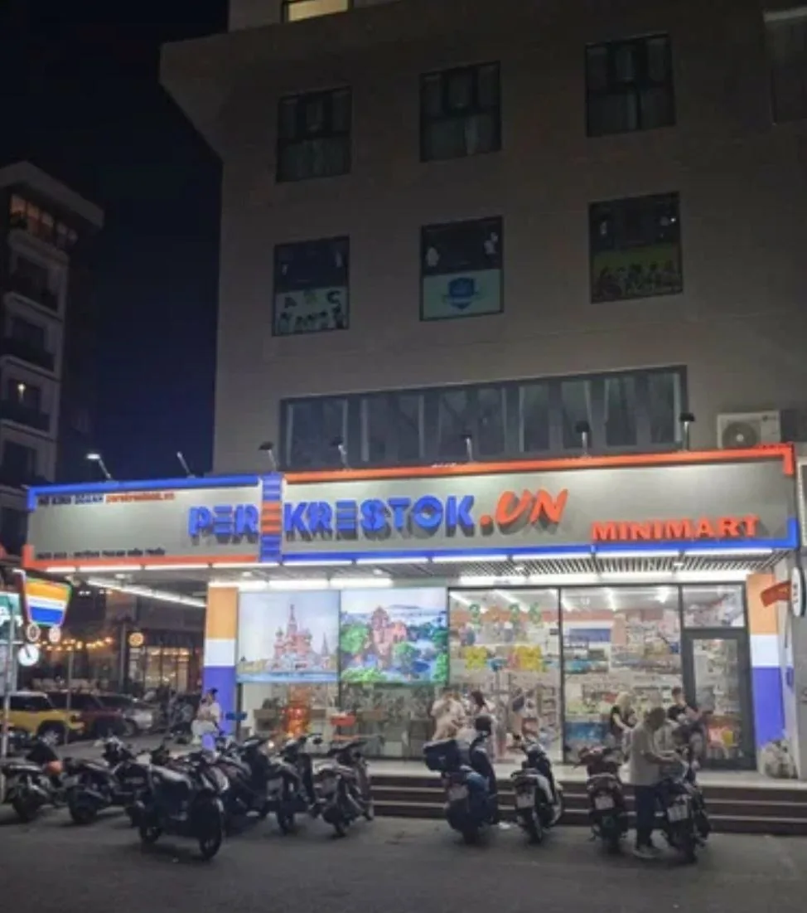
북부 끝자락에서는 대규모 공사가 진행 중입니다. 제 생각에 3~4년 뒤면 호텔, 레스토랑, 공원, 해변이 있는 큰 신도시가 생길 것입니다.
이 새 지역에는 멋진 공연 ‘라이프 퍼펫(Life Puppets)’을 볼 수 있는 베트남 극장 도 극장(Đó Theatre)이 있습니다. 모두에게 꼭 가 보라고 추천하는 곳입니다!
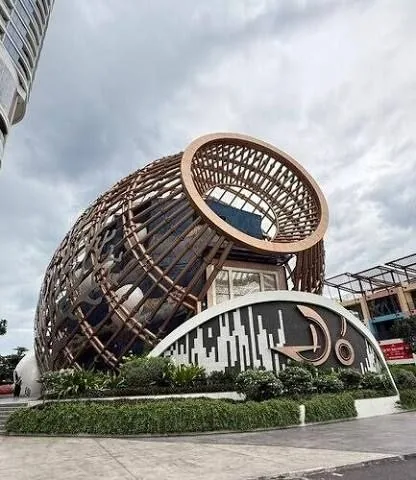
나트랑 서부 — 평범한 일상을 위한 지역
서부는 도시 안쪽, 산 방향에 있습니다.
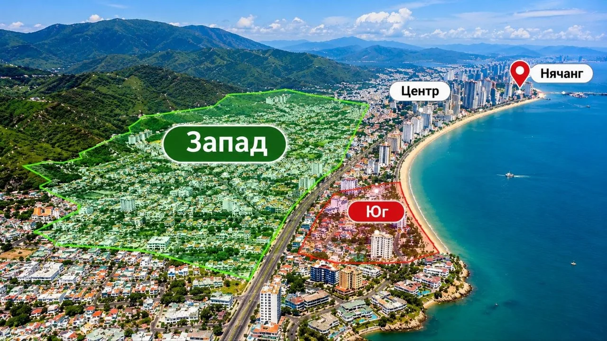
이곳에는 해변도 없고 중심처럼 관광 호텔이 밀집해 있지도 않습니다. 대신 나트랑의 조용한 면, 평범한 도시 생활을 볼 수 있습니다.
서부는 크고, 사람이 오래 살아온, 대조가 뚜렷한 지역입니다.
중심에 가까운 쪽에는 작은 가게와 카페가 있는 오래된 베트남 동네가 있습니다. 더 들어가면 현대적인 주거 단지와 새 개인 주택이 시작되는데, 외국인에게 장기 임대되는 경우가 많습니다. 이런 집은 나트랑에 오래 머물려는 대가족이 주로 빌립니다.
서부에는 대형 쇼핑센터가 있습니다. 다른 일부 주거 지역과의 큰 차이점입니다. 대형 하이퍼마켓이자 쇼핑몰인 GO! Nha Trang, 그리고 23 Tháng 10 거리의 슈퍼마켓 롯데마트(Lotte Mart)가 이곳에 있습니다.
나트랑 서부는 평범하고 조용한 일상을 위한 곳입니다. 이곳에서 나트랑은 휴양지가 아니라 사람들이 그냥 살아가는 도시가 됩니다.
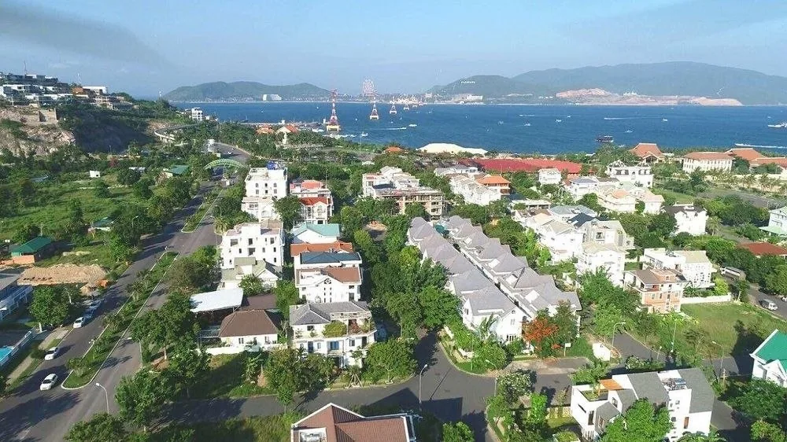
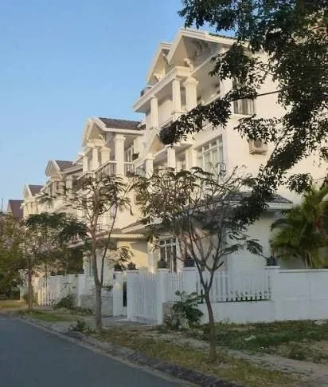
나트랑에서 어느 지역을 고를까?
나트랑은 다양한 도시입니다.
수영장, 아름다운 부지, 좋은 서비스를 갖춘 5성급 ‘올인클루시브’ 호텔에서 쉬고 싶다면 깜라인을 고르세요.
시내를 걷고, 놀고, 바와 레스토랑에 가고, 여러 카페에서 다양한 음식을 맛보고 싶다면 나트랑 중심입니다.
진짜 베트남 동네에서 고요하고 느긋한 삶을 원한다면 남부를 고르세요.
주변에 사람이 거의 없는 완전한 한적함을 원한다면 안비엔입니다.
러시아어 커뮤니티 가까이에서 익숙한 식료품을 사고 러시아 카페에 다니며 살고 싶다면 북부를 고르세요.
아이와 부모님, 강아지와 고양이까지 대가족이 함께 와서 나트랑에 오래 머물 계획이라면 서부를 눈여겨보세요.
나트랑은 곳곳이 다릅니다. 그리고 그것이 가장 큰 장점입니다. 이곳에서는 호텔이나 집뿐 아니라 나에게 맞는 삶의 방식도 고를 수 있습니다: 익숙한 커뮤니티 속 내 사람들 가까이 / 순수한 베트남의 일상 속으로 / 혹은 푸른 녹음 속에서 매일 쪽빛 바다를 바라보며 한적하게.